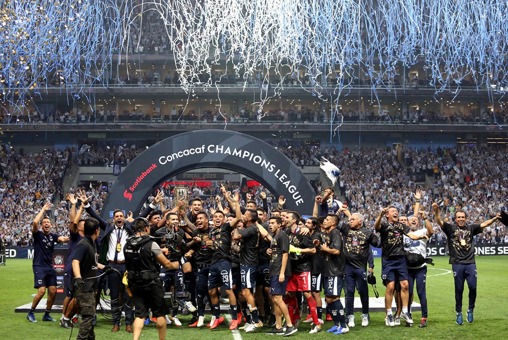

La que mas brilla:
Terminó la maldición de Rayados en el Gigante de Acero, se terminó el mito de la gallina y el equipo del Cerro de la Silla cobró revancha ante Tigres para demostrar que gigante de la Concachampions solo hay uno. Con un juego práctico e inteligente y dominadores durante gran parte del juego, los albiazules empataron 1-1 ante la UANL, para beneficiarse del 2-1 global y levantarse con su cuarto título de la Concacaf en su estadio, donde hace año y medio Tigres les había ganado una Liga.